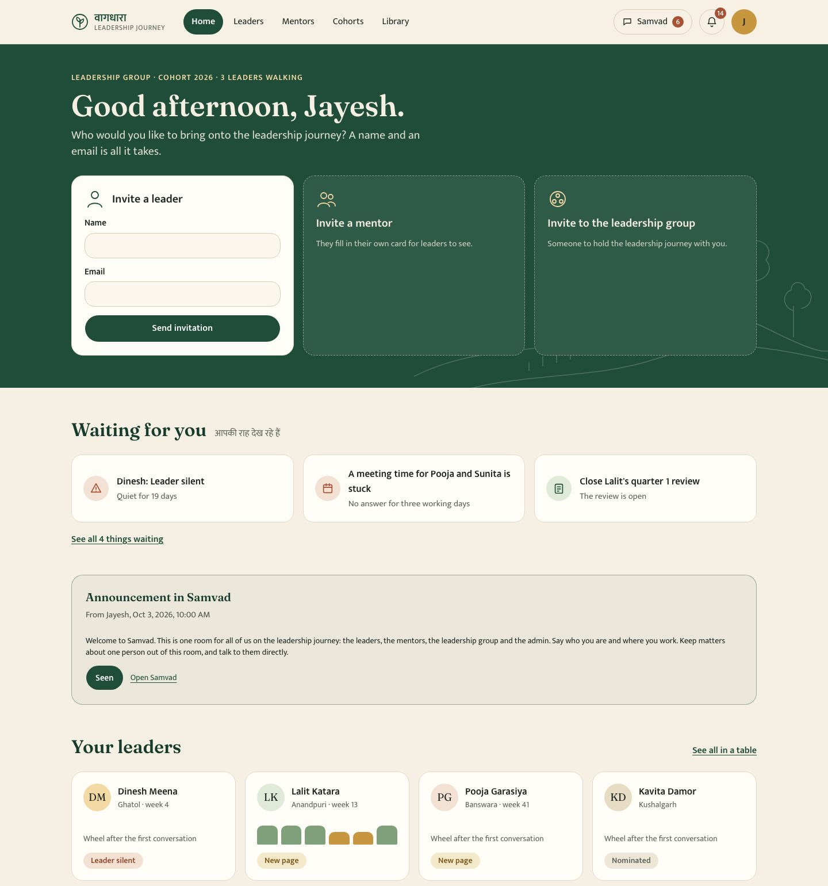
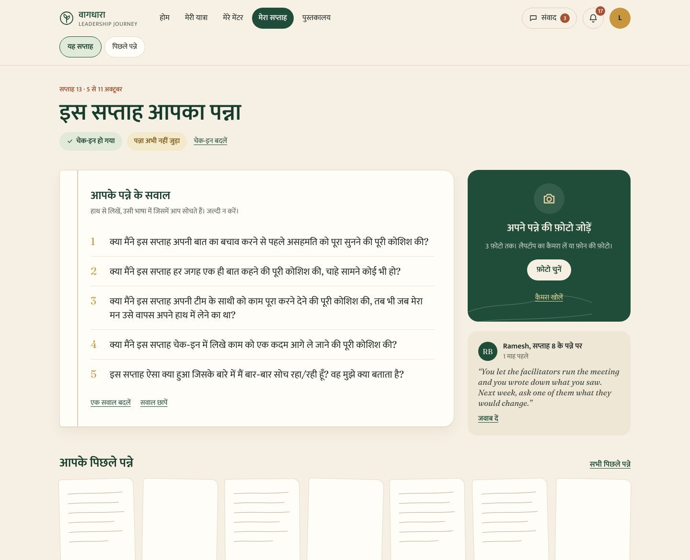
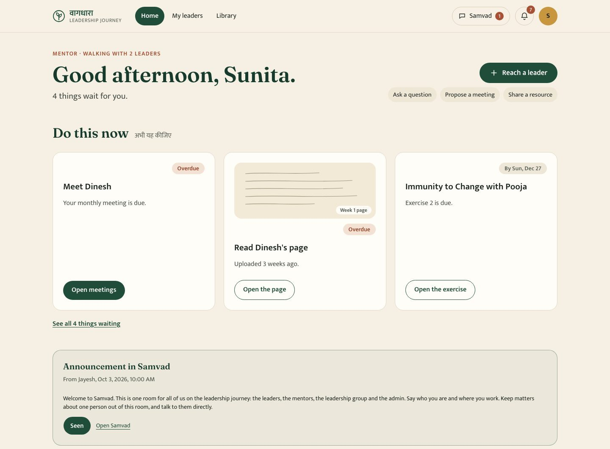

The leadership group's home, with made-up fellows. What is waiting sits at the top. Each fellow's wheel sits below.
The journey
VAAGDHARA works with tribal communities across the Rajasthan, Gujarat and Madhya Pradesh border. It wanted a way to grow its next leaders that looks at each one as a whole person. Some fellows already lead a team. Others are young facilitators and office staff who joined a few years ago.
The journey looks at a fellow in six areas, drawn as a wheel. A first conversation places the fellow on it. Every quarter after that, the wheel is drawn again, and everyone can see how it moved.
Self
Craft
Knowledge
Persona
Relationships
Purpose
How a fellow walks it
- 1
An invitation, and consent
The leadership group invites a fellow by name and email. The fellow reads what the journey asks and what will be kept about them, and agrees before anything starts.
- 2
A first conversation
The AI asks the questions and follows up on short answers. It starts with "Tell me your life story in ten minutes". A fellow can mark any life story answer private from their mentor. A person in the leadership group confirms the wheel.
- 3
A mentor and a path
The fellow chooses a mentor from a roster. Fellow, mentor and the group agree a path, and each signs before it is frozen.
- 4
Every week, a page by hand
A short check-in, then five questions picked for that week. The fellow writes on paper, in the language they think in, and uploads a photograph. The mentor reads it and replies.
- 5
Every quarter, real work and a review
One piece of VAAGDHARA work a little beyond the fellow, one book or course, a monthly circle with the cohort, a short re-assessment, the mentor's note, and a review the group closes.
- 6
A capstone
In the final quarter the fellow proposes and presents a capstone, and the group signs off the journey.

What the AI may do
The fellow does their own thinking and writing. Inside that rule, the AI is used wherever it helps a mentor see the fellow more clearly. Three limits are written into the code:
- It never writes a reflection, a check-in, a path or a note for the fellow. The fellow's page is always shown as the photograph, before anything the AI says about it.
- It never acts on its own. A wheel, a path, a mentor match, a quarterly note and a completion each need a named person to confirm, send or sign.
- It never shows a fellow an opinion about themselves that a person has not seen first. Its notes on a page go to the mentor and the group.
Who sees what
Fellow
Their own wheel, path, pages and mentor's comments, and what is due this week. Never another fellow's material.
Mentor
Only the fellows they walk with. Can ask a question, propose a meeting or share a resource from one button.
Leadership group
Every fellow in one grid, alerts when someone goes quiet, and everything waiting for a signature.
Admin
Keeps the system running. Cannot open a fellow's pages, wheel or transcript.

How it was built
I wrote the specification first, from VAAGDHARA's concept note, and then built it in twenty-six phases over ten days. Each phase ended with a written report of what was built, what was checked and what was left for a decision.
- Next.js and TypeScript, Postgres on Supabase in Mumbai, Vercel, Resend for email.
- The Claude API at ten points in the journey, each call logged with its tokens and cost.
- 607 automated tests. The suite also fails on a dash, a Title Case heading or a banned word in anything a person reads, so the plain writing stays plain.
- Consent text kept in versions. When a fellow asks for something to be deleted, any text that quoted it goes too.
- Every screen in English and Hindi, switched with one press.